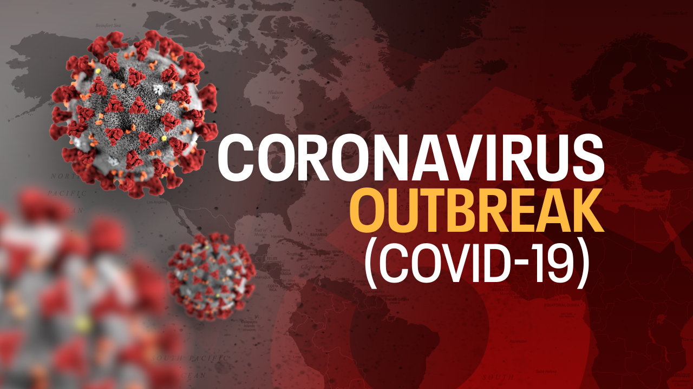
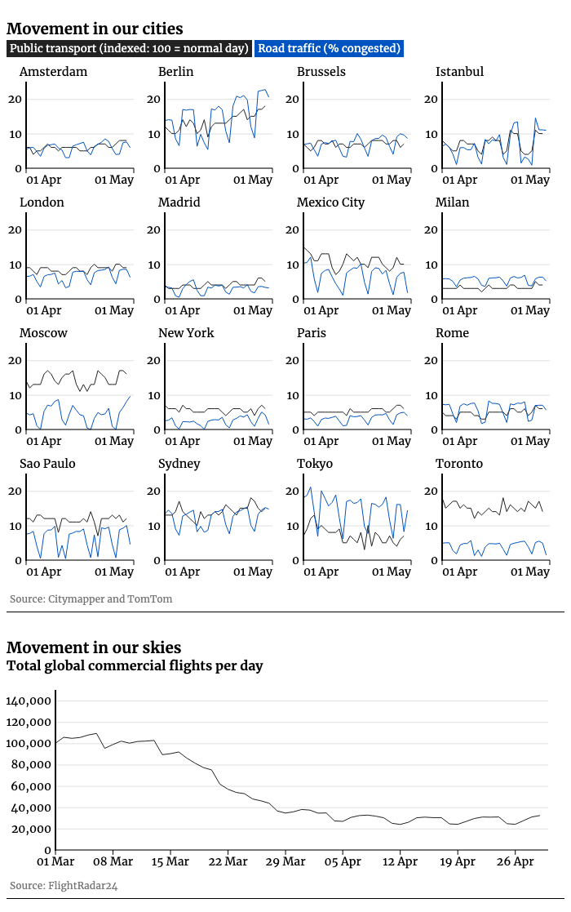

COVID-19 Outbreak
Coronaviruses are an enormous group of infections that may cause sickness in creatures or people. In people, a few coronaviruses are known to cause respiratory contaminations extending from the regular virus to progressively extreme sicknesses, for example, Middle East Respiratory Syndrome (MERS) and Severe Acute Respiratory Syndrome (SARS). The most as of late found coronavirus causes coronavirus sickness COVID-19. On March 11 the WHO authoritatively announced the Covid-19 episode a pandemic. "WHO has been surveying this flare-up nonstop and that we are profoundly concerned both by the disturbing degrees of spread and seriousness and by the disturbing degrees of inaction," said its chief general Tedros Adhanom Ghebreyesus. In spite of the fact that the WHO assigned Covid-19 a "general wellbeing crisis of global concern" (PHEIC) on January 30, it had been hesitant to consider it a pandemic.
 Since 2 January 2020, the three degrees of WHO (China nation office, Regional Office for the Western Pacific and base camp) have been cooperating to react to this flare-up of COVID-19. On 30 January, WHO proclaimed the flare-up of a Public Health Emergency of International Concern (PHEIC). On 11 March, WHO Director-General portrayed COVID-19 as a pandemic. Enormous scope investigations of everybody are required to decide how wide the sickness has spread, how destructive the infection truly is, what's more, regardless of whether enough of the populace has gotten safe to social removing limitations to ease. The World Health Organization (WHO) and the European Investment Bank (EIB) have fortified their cooperation to address the wellbeing effect of Covid-19, especially in low and center salary nations. WHO executive general Dr. Tedros Adhanom Ghebreyesus stated: "Joining the general wellbeing experience of the World Health Organization and the monetary skill of the European Investment Bank will add to a progressively successful reaction to COVID-19 and other squeezing wellbeing challenges."
The coronavirus pandemic has had a significant monetary effect on the world's capital markets. Be that as it may, some biopharma organizations have considered this to be an open door for extraordinary development in esteem. Budgetary information from GlobalData's Pharma Intelligence Center Companies Database uncovers that little top ($0.3–2.0B) open organizations chipping away at the improvement of a Covid-19 medication are seeing development in showcase top among the dive of different businesses. Peruse more here.
Our week by week versatility graph shows a reasonable pattern: some world urban areas are seeing expanded development even before lockdown limitations are facilitated.
Berlin has seen the greatest increment in both open vehicle movement and in rush hour gridlock clog in the course of the last fortnight.
Schools, historical centers, exhibitions, zoos, play areas, and places of worship are relied upon to revive in Germany on Monday just because since the lockdown began. A few shops have as of now re-opened in front of the lockdown lift. In any case, global travel is as yet stale. Ryanair and
British Airways have both as of late reported they are eliminating positions because of low deals,
with Ryanair expecting traveler numbers to remain under pre-coronavirus emergency levels in any event until summer 2022.
Limitations on universal and national travel to slow the spread of the infection caused a sensational fall in worldwide rush hour gridlock by street, sky and ocean. However, the image isn't uniform over the world. A few urban communities in the Far East have dodged a complete lockdown and as such have been seeing examples which are somewhat nearer to the standard. So as to follow the most recent circumstance, this realistic is taken care of by three key sources. We utilize Citymapper's versatility file to screen open vehicle use, TomTom's live traffic list to quantify street use, and outline information from FlightRadar24 to tally the absolute number of business flights each day.
Regularly balanced GDP diminished by 3.8% in the euro region and by 3.5% in the EU during the principal quarter of 2020, contrasted and the past quarter, as indicated by a fundamental glimmer gauge distributed by Eurostat, the factual office of the European Union. These were the keenest decreases saw since 1995. The COVID - 19 pandemics have put almost 50% of the worldwide workforce in danger of losing their employments, as indicated by the International Labor Organization (ILO) As indicated by the IOL: The proceeded with a sharp decrease in working hours all-inclusive because of the Covid-19 flare-up implies that 1.6 billion laborers in the casual economy – that is almost 50% of the worldwide workforce – remain in impending peril of having their occupations wrecked. At area level the IOL says the hardest-hit remember the 232m workforce for discount and retail, 111m in assembling, 51m in settlement and food administrations, and 42m inland and different business exercises. Employments accessible in the car business dropped strongly a week ago as the world economy kept on drudging under the Covid-19 pandemic.
 Our activity tracker – controlled by insight from GlobalData – sees open situations over the world in the scope of businesses. The quantity of "dynamic" occupations every day are listed against the circumstance on 1 March, in a matter of seconds before the pandemic was pronounced by the WHO. Just the food administration, force, and pharmaceutical enterprises have seen an ascent in dynamic employments from that point forward. Employments in the car business were down from 65.2% of March 1 levels on April 17 to 51.9% of March 1 levels on April 24 – the greatest negative week-on-week change in any division. Travel and the travel industry remain the most exceedingly awful hit industry throughout the pandemic, with dynamic employments at only 28.4% of the levels seen on March 1. The following most noticeably awful hit segments – clinical, protection, mining, and oil, and gas – saw further week-on-week drops in work movement, as well. Covid-19 has had a significant, progressing monetary effect over the globe; however, that effect isn't uniform across various businesses. While some monetary segments have seen business quickly decay, others have – until this point in time – been increasingly steady. Some have even observed an expansion sought after. This outline plans to give an expansive review of which areas are enduring the most since the WHO pronounced Covid-19 a pandemic. It utilizes restrictive unique knowledge gave by GlobalData to follow the number of occupations open for applications, over the world, across 19 monetary parts. The outline diagram shows the six which have seen the greatest rate drop in these "dynamic" occupations.
The financial effect of the Covid-19 pandemic is relied upon to last over three years for a larger part of the nations influenced. Gross domestic product levels are probably going to tumble to new record low levels and larger part of the worldwide workforce is required to confront joblessness. In excess of 430 million organizations in areas, for example, retail and assembling are relied upon to confront genuine interruption.